While doing security audit of iOS apps, there are a lot of tasks that we have to repeat every time. This includes finding out the class information for the app, checking if the application stores any important data in plist files, analyzing the content in the database files etc. These tasks can be a little time consuming every time and so it doesn’t make quite a lot of sense to repeat them over and over again for every app. We have also looked at some tools like Snoop-it and iNalyzer that make our job easier by automating some of these tasks. In this article, we will talk about a new tool named iOS Reverse Engineering Toolkit (iRET) that has just been released to assist penetration testers in automating most of the tasks involved in a iOS penetration test. The project is developed and maintained by @S3Jensen.
In the author’s own words, here is what the toolkit does.
It’s a toolkit that allows you to automate many of the manual tasks an iOS penetration tester would need to perform in order to analyze and reverse engineering iOS applications. And the bonus is this can all be performed right on the device.
Also, please note that iRET is a static analysis tool rather than a dynamic analysis tool.
So let’s jump right into it. You can download the toolkit from here. So download this zip file on your device and unzip it.
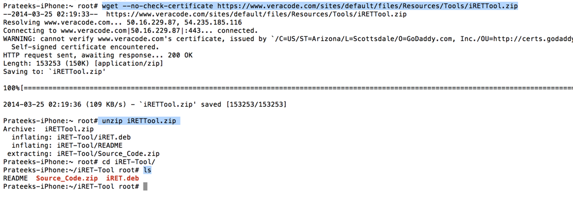
Inside it, there will be a .deb file. You can install it using the dpkg command. Also make sure to install python on your device otherwise iRET won’t work.
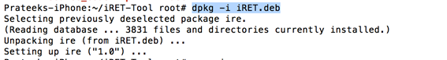
Now respring or reboot your device (in my case, i had to reboot the device) and you will see a new icon with the name iRET. Tap on it to launch the app. As you can see, we can start the server and then connect to it via our browser. So let’s tap on start and navigate our browser to the mentioned address.
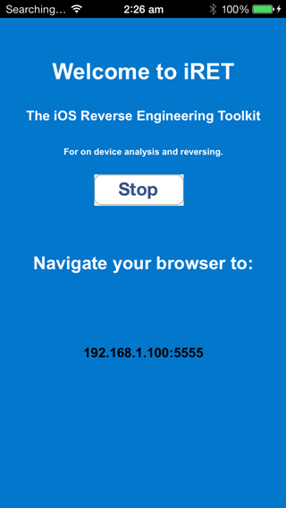
We are provided the interface as shown in the image below. Please note that the first time you navigate browser to this address, it takes a little bit of time, so be a little patient.
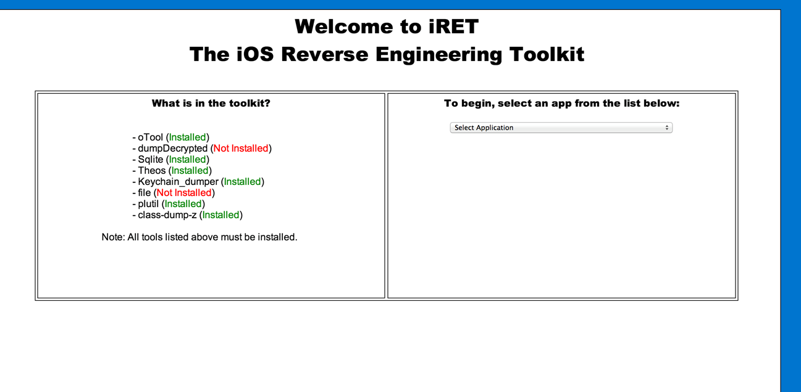
On the left hand side, i can see whether the tools needed by iRET to perform its tasks are installed or not. It looks like i have almost all the tools that i need except a few like file and dumpdecrypted. Installing file is very straightforward as you can download it just by searching via Cydia. However, installing dumpdecrypted on the iOS device could be a bit tricky for beginners so i am going to cover it here. Make sure you have all these tools installed otherwise iRET won’t be able to perform some of its functions.
To install dumpdecrypted, you need to download the zip file from its github url on your computer, compile it and then upload the resulting .dylib file on your device. So download the zip file and use the make command to compile the application. As you can see, this will create a .dylib file.
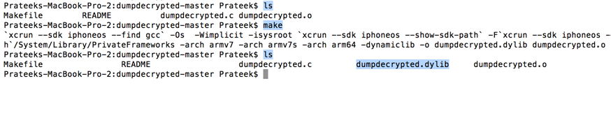
So now let’s move this dylib file to our device. In my case, i just did a drag and drop inside the folder /Library using iExplorer. So now when we refresh the interface, we can see that we have all the tools installed.
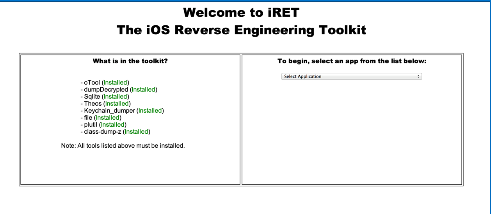
From the right side, we can select the application that we want to analyze. In this case, let me select the Damn Vulnerable iOS App (DVIA).
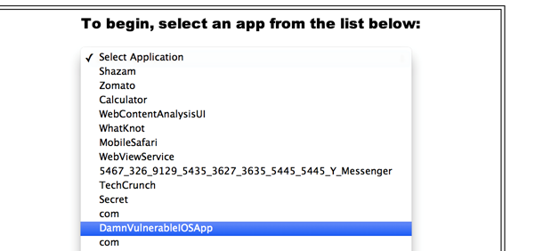
Once the application is selected, iRET gives us this info in the binary analysis tab. iRET uses otool to analyze the binary and gives information such as whether PIE is enable, whether stack smashing protection and automatic referencing counting (ARC) is enabled or not.
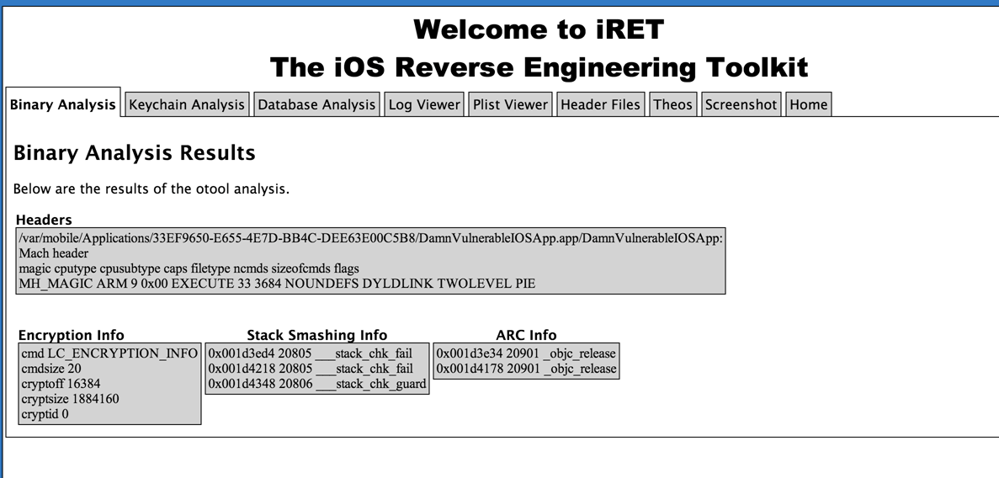
The next tab shows info that the application has stored in the keychain. iRET uses Keychain_dumper tool to figure this out. Normally, i would be running keychain_dumper using the command line. Using iRET makes it much more easy to find out this information. For me, this feature didn’t work though.
The next tab is database analysis. iRET searches for all the database files (.db or .sqlite) in the application sandbox and dumps out all the content from these database files for us to analyze.
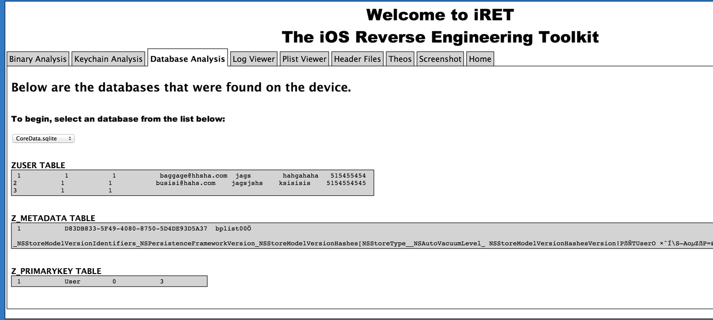
The log files tab searches for all the log and text files and allows us to monitor the contents of it. For me, iRET wasn’t able to find out the system log file though.
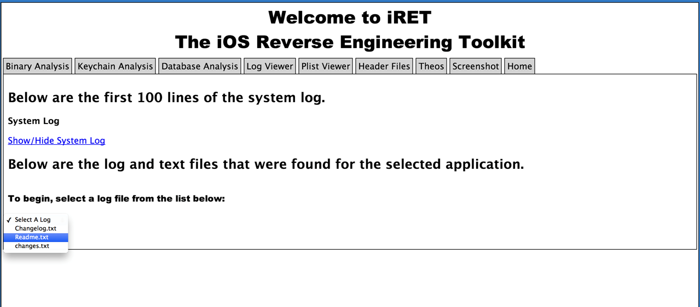
The next tab is the plist viewer. The application looks for all the .plist files in the application sandbox and displays us the list so we can analyze the contents of each of the files. This feature could be very useful in quickly analyzing the contents stored by the application in NSUserDefaults, the main plist file that can give us information like the url scheme for the app or any other plist file that might contain some important information.
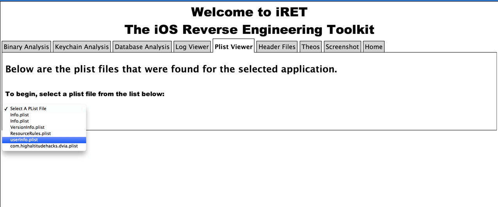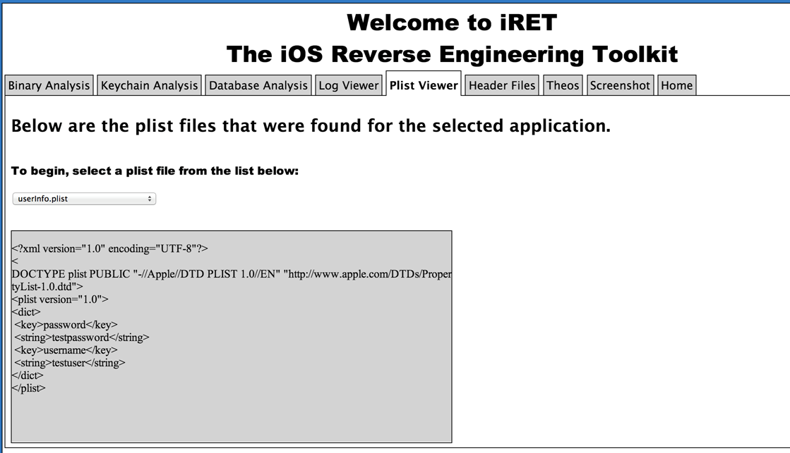
The next tab which is Header files does the following. If the application is encrypted, iRET will decrypt the application. It then dumps the class information for this file and dumps them into seperate header files that are displayed in the dropdown as shown below.
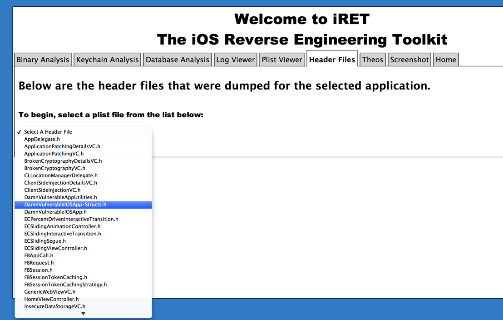
Once you select a header file, the content of the header is converted into a theos logify format, which the user can use in the theos tab for quick theos tweak creation. For me, this feature didn’t work and after a brief discussion with the author on twitter we still were not able to figure out the problem. However, here is the screenshot from the author’s blog that shows the contents of the header file being converted into logify format.
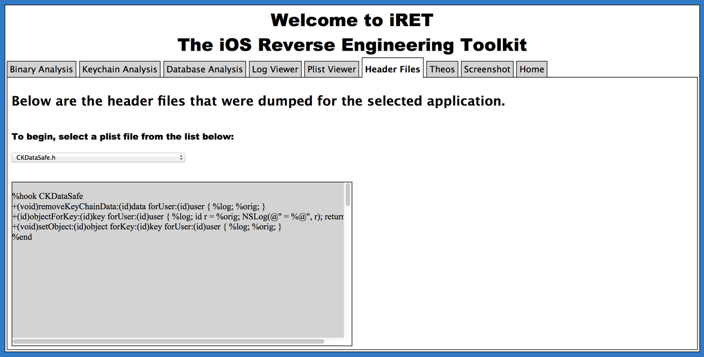
The Theos tab allows us to create, build and deploy a theos tweak for the application in just a few minutes. Once you enter the information for your tweak, it can allow you to edit the theos files (Tweak.xm, Makefile) , build and deploy the tweak. Please note in order to build and deploy the tweak, you will need to have alteast one SDK installed in the folder /var/theos/sdks on your device. You can find the sdk installed on your Mac (if you have Xcode installed) in the location /Applications/Xcode.app/Contents/Developer/Platforms/iPhoneOS.platform/Developer/SDKs/iPhoneOS7.0.sdkWe will cover writing tweaks using Theos later in this series.
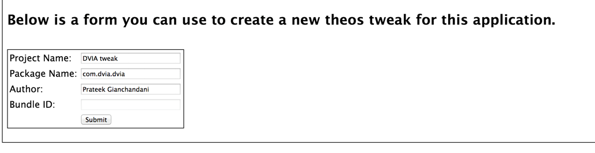
The screenshot tab shows the application snapshot taken by iOS when the application enters into the background. These snapshots are stored in the application sandbox without any encryption and might reveal some confidential informaiton.
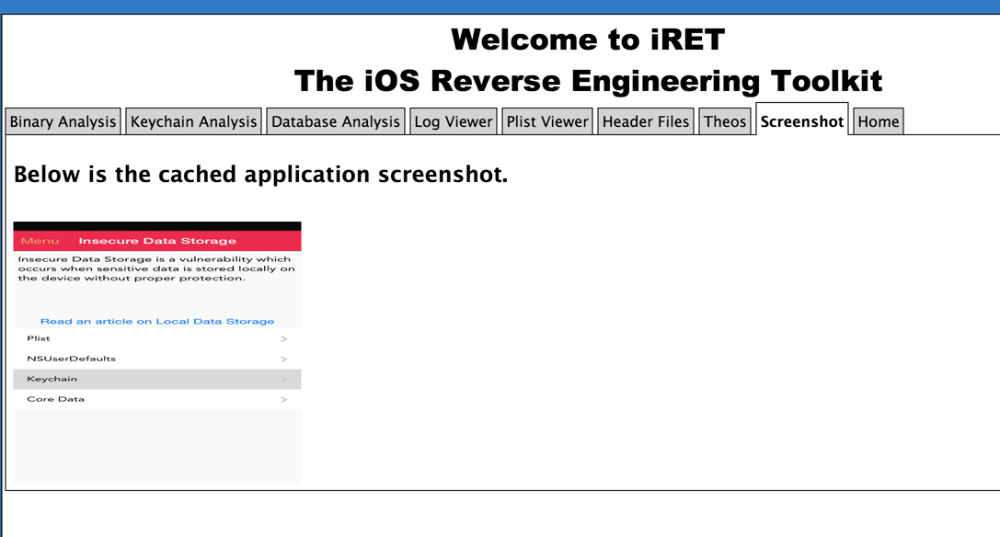
iRET is a very handy tool for analyzing the security of iOS apps and can really save you a lot of time with some of its features. The tool has just been released and hence contain a few bugs but i can clearly see this becoming into a very handy tool in the near future. The purpose of this article was to just give you an introduction with this tool. This article will be updated as iRET receives more features and bug fixes.
You can find the blog post regarding the tool from the author here.